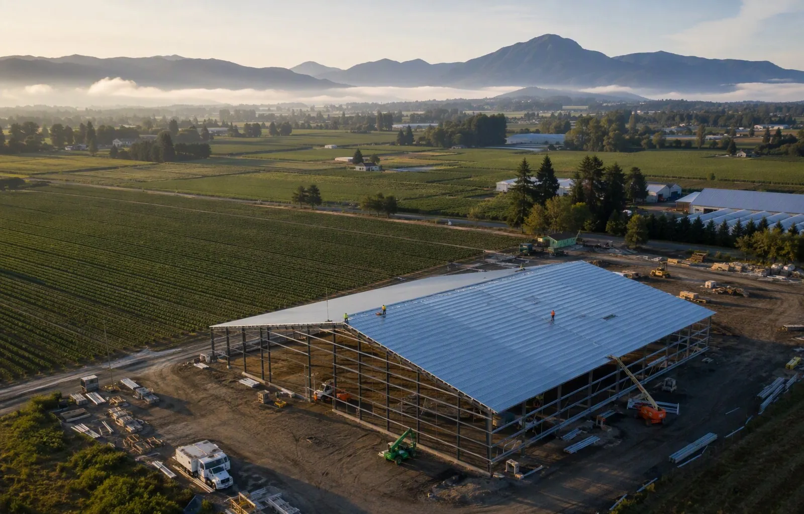

Custom Safety Plans
A complete program written around your Abbotsford farm, plant, or fleet – plain-language, built for seasonal crews, and organized and ready to work.
Learn MoreAbbotsford is the most intensively farmed city in Canada – and the trucking fleets, equipment operators, and construction firms around that agricultural core all answer to WorkSafeBC. Alcantara Safety Solutions builds WorkSafeBC-aligned safety plans, compliance reviews, and risk assessments for Abbotsford employers – on-site, fixed-fee, and written for Valley realities.
Abbotsford's agricultural identity is not branding – it is arithmetic. The city produces roughly a third to a half of British Columbia's chicken, dairy, eggs, and turkey. Its fields grow the majority of the Fraser Valley's sweet corn and a berry industry – blueberries, raspberries, strawberries – that supplies national and export markets. The Airport area's soils make it the most productive raspberry-growing ground in the country. Around that farm core sits a dense support economy: equipment dealers and agricultural services, greenhouse and nursery operations, cross-border trucking, airport logistics, and the construction firms building the Valley's next generation of industrial and residential space.
This is an economy where WorkSafeBC coverage surprises people. Farm employers are fully covered by the Workers Compensation Act – and agricultural work is legitimately hazardous: machinery entanglement, confined spaces in silos and manure systems where hydrogen sulfide can kill in seconds, chemical handling, large animal work, and heat stress in greenhouses and harvest fields. The 2021 Sumas Prairie floods added a chapter every local operator remembers: emergency response, worker safety during evacuation and recovery, and the long reconstruction of dyked and drained land. Safety planning in Abbotsford is not abstract.
We work with Abbotsford employers across the region's working economy – farms and greenhouses, trucking and equipment operators, and the builders raising the city's next generation of industrial and residential construction. Programs are written in plain language, built for seasonal and multilingual workforces, and grounded in on-site walkthroughs of your actual operation.

Dairy and poultry barns, berry fields, vegetable ground, and greenhouse operations across Matsqui, Sumas, and the Uplands all carry regulated hazards that inspectors know well: PTO and machinery guarding, confined space entry for silos and manure systems, ammonia and chemical storage, large animal handling, and tractor safety. Seasonal scale compounds everything – a farm employing six people in March may employ sixty in July, and every one of those workers triggers orientation obligations from their first shift. We write farm safety programs in plain language, designed for multilingual crews and built so a harvest ramp-up does not leave your documentation behind.
Abbotsford's farms and greenhouses – berries, dairy, poultry, nursery stock – run on machinery, seasonal crews, and tight windows. Machinery guarding, confined spaces in silos and manure systems, chemical storage, and seasonal worker orientation are all regulated, inspectable obligations under WorkSafeBC. We write farm safety programs in plain language, built for operations where the workforce changes with the season.
The Fraser Valley leads Canada in greenhouse technology, and Abbotsford's controlled-environment operations have a hazard profile all their own: heat stress and humidity, chemical and CO2 enrichment systems, elevated work in glazing and maintenance, biological pest controls, and energy infrastructure. We write greenhouse programs that address what actually happens inside the glass – including the young and seasonal workers who do much of it.
Abbotsford sits on the Trans-Canada and minutes from the Sumas-Huntingdon border crossing, and its trucking sector moves agricultural and industrial freight across Western Canada and the Pacific Northwest. Fleet compliance here means driver orientation and supervision documentation, load securement for agricultural and refrigerated freight, yard traffic management, shop and maintenance bay safety, and the owner-operator obligations that attach to carriers. We build fleet safety programs scaled to five trucks or fifty, including the cross-border operational realities Abbotsford carriers live with.
Abbotsford's growth – residential expansion, industrial building, and the ongoing post-flood infrastructure work – keeps local contractors busy, and increasingly procurement-aware. Municipal and institutional work expects documented safety programs; agricultural construction brings its own hazards in barn, shop, and dyke work. We write site-specific plans and subcontractor packages for Valley contractors, sized for lean operations that need to pass prime contractor review on the first submission.
The most important WorkSafeBC fact for Abbotsford employers is the one most often missed: agriculture is covered. Farm operators are employers under the Workers Compensation Act, farm workers are workers, and the OHS Regulation applies to fields, barns, and greenhouses as fully as to factories. WorkSafeBC runs agricultural inspection initiatives through the Valley every year, and the recurring citations are consistent: unguarded machinery, undocumented orientation, missing WHMIS training for pesticides and chemicals, and no confined space procedures for silos and manure systems.
Two Abbotsford-specific realities shape our programs. First, seasonal and multilingual workforces: harvest hiring compresses orientation obligations into a few intense weeks, and instruction must be delivered in a way workers actually understand – we build orientation systems designed for that reality, with documented comprehension rather than sign-here attendance. Second, flood-aware emergency planning: after 2021, emergency preparedness in the Sumas and Matsqui lowlands is not theoretical. We build site-specific emergency response and evacuation procedures into every lowland Abbotsford program, including worker safety during flood events and recovery operations.
Every engagement starts with your operation, not a template. These are the services Abbotsford employers ask for most:
A complete program written around your Abbotsford farm, plant, or fleet – plain-language, built for seasonal crews, and organized and ready to work.
Learn MoreField, barn, and plant-floor assessments covering machinery, confined spaces, ammonia systems, and seasonal workforce hazards.
Learn MoreA gap review of your documentation against the OHS Regulation, WorkSafeBC agricultural inspection priorities, and your customers' audit standards.
Learn MoreAbbotsford is in our core on-site service area, and we cover the whole city – Sumas and Matsqui prairies, the Uplands, the industrial districts, and the border corridor. Agricultural and processing operations cannot be assessed from a questionnaire; we walk your barns, fields, and plant floors during operations and build the plan from what we actually see.
Engagements run on a fixed fee quoted before we start: discovery and walkthrough, draft program in about two weeks, a working session with your supervisors, then final documents and a briefing. For seasonal operations, we time the work so orientation systems are in place before your harvest ramp – not in the middle of it.
Ready when you are: call (778) 954-1988 or contact us – we typically respond within two business days.
Yes, fully. Agricultural employers are covered by the Workers Compensation Act, and the OHS Regulation applies to farm work – machinery, chemicals, confined spaces, animal handling, and worker orientation included. WorkSafeBC runs agricultural inspection initiatives in the Fraser Valley every year, and farms are regularly registered, inspected, and – where documentation is missing – ordered to comply. We help farm employers get registered and documented properly.
By systemizing them before the season starts. Every seasonal worker triggers new-worker orientation obligations from their first shift, and with harvest-scale hiring, that means an orientation system that is fast, consistent, multilingual where needed, and documented to inspection standard. We build the package and train your leads to deliver it, so day-one orientation is a routine, not a scramble.
Both are confined spaces under the OHS Regulation, and both can generate deadly atmospheres – hydrogen sulfide in manure systems can incapacitate a person in seconds. Entry requires a written confined space program: hazard assessment, entry procedures, atmospheric testing, ventilation, and rescue arrangements. Unplanned rescue attempts by co-workers are how single fatalities become multiple ones. We write confined space programs sized for farm operations – practical, testable, and compliant.
Yes – and in the Sumas and Matsqui lowlands, it should be specific. Flood events create worker hazards during evacuation, shutdown, and recovery: electrical, structural, contaminated water, and fatigue risks among them. We build site-specific emergency response procedures into lowland Abbotsford programs, including flood event protocols, so the next emergency finds your team with a plan instead of improvisation.
For a single Abbotsford operation, a complete custom program is typically ready within two to three weeks of our walkthrough, including revisions. For seasonal operations, we schedule so the program and orientation system are in place before your ramp-up. Tell us your season's dates and we will work backward from them.
Also serving: Langley · Surrey · Coquitlam · Burnaby · All 16 Service Areas
Industries we serve: Construction · Landscaping · Warehousing · All Industries
Contact us – we will identify exactly which WorkSafeBC requirements apply to your operation and quote a fixed fee before we start.
Contact Us